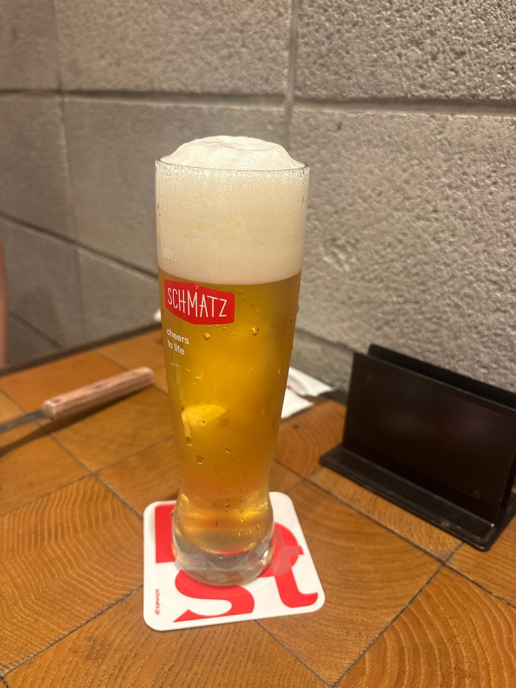
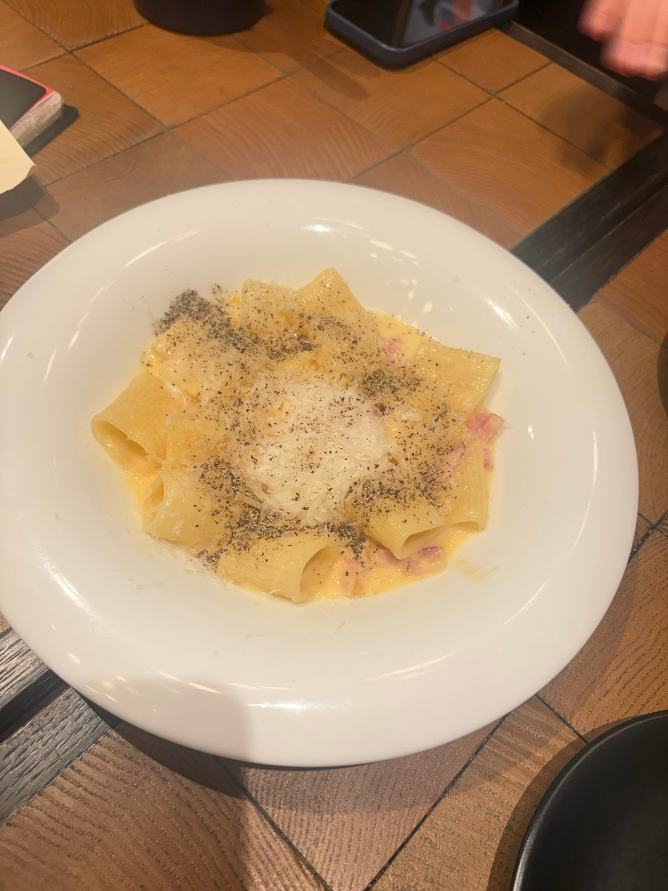

슈마츠 시모키타자와｜독일 맥주와 소시지로 느긋하게 이야기하는 밤

시모키타자와는 빈티지 숍과 라이브 하우스로 유명하지만, 차분하게 한잔하면서 오래 이야기하고 싶을 때는 슈마츠를 추천해요. 시모키타자와역에서 걸어서 5분 정도 걸리는 독일 맥주와 독일 요리 가게예요.
근처에 사는 외국인 친구와 둘이서 갔어요. 붐비지 않아서 바로 들어갈 수 있었어요.
소시지
소시지 모둠은 세 종류였어요. 제 기억으로는 치즈, 훈제, 기본 소시지였고, 사워크라우트와 홀그레인 머스터드가 함께 나와요. 맛이 다 달라서 나눠 먹으면서 비교하는 재미가 있어요.
맥주

맥주는 정말 부드럽게 넘어가고 맛있었어요. 맥주 메뉴만 7페이지 정도라서 종류가 아주 많아요. 여러 가지 마셔 보고 싶은 분이라면 고르는 재미가 있을 거예요.
카르보나라도 주문했어요.

분위기
가게는 꽤 차분하고 목소리가 잘 들려서, 크게 말하지 않아도 대화가 돼요. 천천히 이야기하고 싶을 때 딱 좋아요. 외국인 손님도 많았어요.
가격
둘이서 소시지, 카르보나라, 그리고 음료를 각자 두 잔 정도 주문해서 6,000엔 정도 나왔어요. 1인당 3,000엔쯤이라 보통이거나 조금 비싼 편이라고 생각해요.
이런 분께 추천해요
- 여러 종류의 맥주를 마셔 보고 싶은 분
- 시모키타자와를 구경한 뒤 조용한 곳에서 오래 이야기하고 싶은 분
- 장소
- SCHMATZ Shimokitazawa シュマッツ 下北沢
- 지역
- 시모키타자와
현지인과 함께 가 보고 싶다면
투어 보기맞춤형 프라이빗 투어로 이런 곳들을 안내해 드려요.